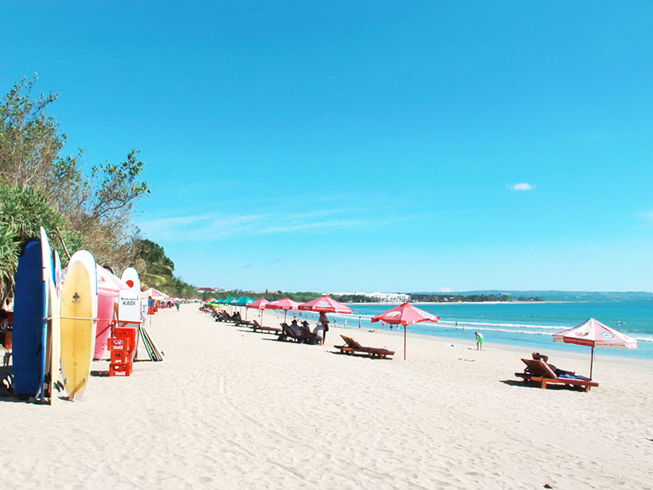
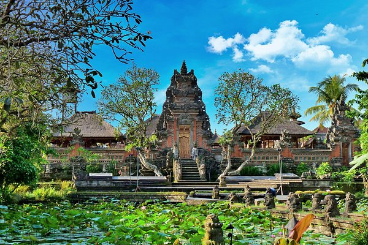
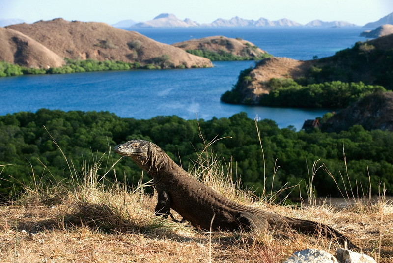
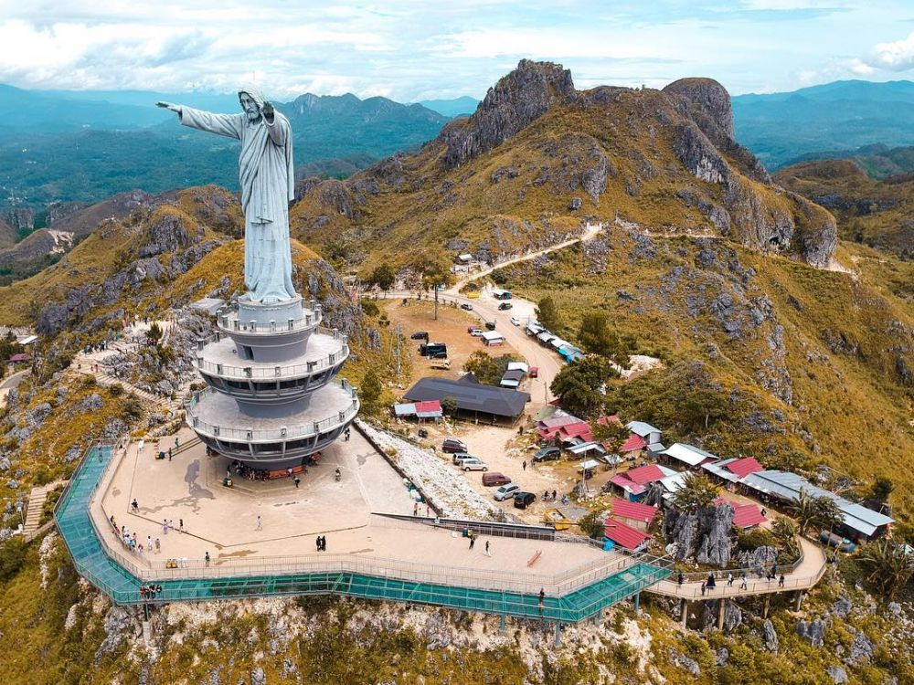
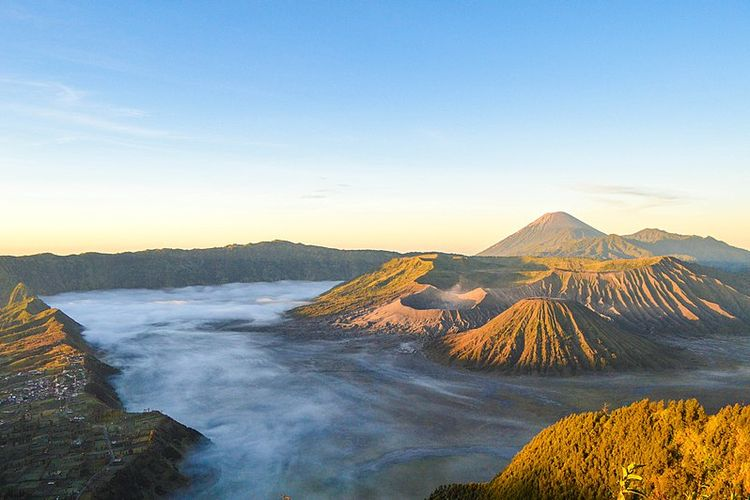
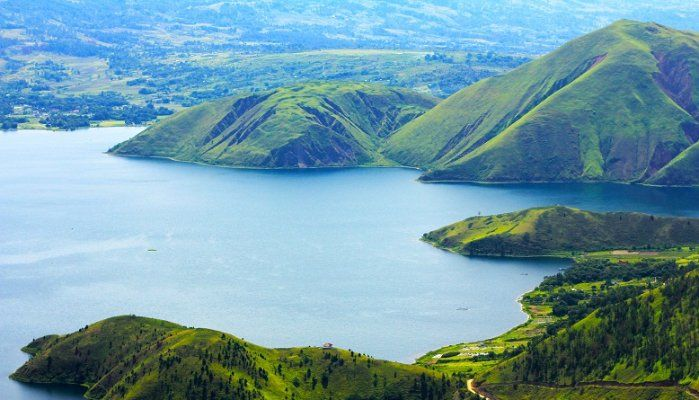
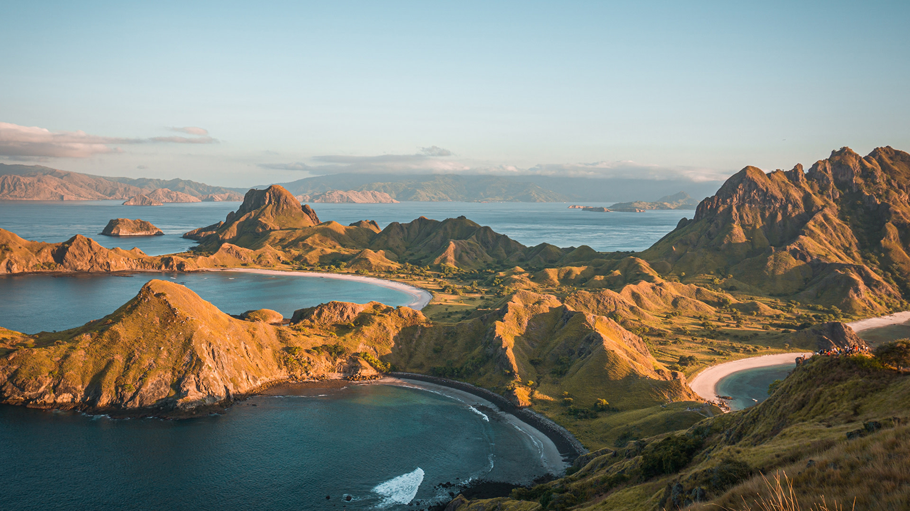
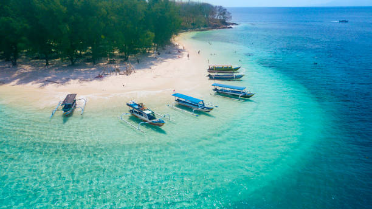
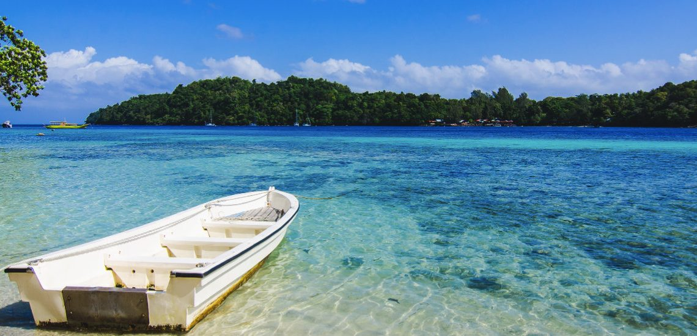

Pariwisata Indonesia
Sumber : wisatahalimun.co.id
Indonesia menawarkan berbagai destinasi wisata menakjubkan, mulai dari pantai-pantai indah hingga gunung-gunung yang megah.
Indonesia, secara resmi Republik Indonesia (Bahasa Indonesia: Republik Indonesia), adalah sebuah negara kepulauan di Asia Tenggara dan Oseania antara samudra Hindia dan Pasifik. Terdiri dari lebih dari 17.000 pulau, termasuk Sumatera, Jawa, Sulawesi, dan sebagian Kalimantan dan Nugini. Indonesia adalah negara kepulauan terbesar di dunia dan negara terluas ke-14, dengan luas 1.904.569 kilometer persegi (735.358 mil persegi). Dengan jumlah penduduk sekitar 278 juta jiwa, Indonesia adalah negara dengan jumlah penduduk terbesar keempat di dunia dan negara dengan mayoritas penduduk Muslim terbesar. Jawa, pulau terpadat di dunia, adalah rumah bagi lebih dari separuh penduduk negara ini.
Beberapa tempat wisata Indonesia yang terkenal dan mendunia
1. Bali: Pulau Bali terkenal karena pantai-pantai indahnya, budaya yang kaya, dan hiburan malam yang meriah. Tempat wisata terkenal di Bali termasuk Pantai Kuta, Ubud, Tanah Lot, dan Gunung Agung.
Pantai Kuta
Sumber : finaninsia.com
Ubud
Sumber : tripadvisor.com
Tanah Lot

Sumber: smansasingaraja.sch.id
Gunung Agung

Sumber : istockphoto.com
2. Yogyakarta: Yogyakarta adalah pusat budaya Jawa, dengan banyak candi dan istana bersejarah. Salah satu tempat yang paling terkenal adalah Candi Borobudur, yang merupakan situs Warisan Dunia UNESCO.

Sumber : borobudurpark.com
3. Taman Nasional Komodo: Terletak di Pulau Komodo, taman nasional ini adalah rumah bagi komodo, reptil raksasa yang unik. Ini adalah satu-satunya tempat di dunia di mana Anda dapat melihat komodo dalam habitat aslinya.
Sumber : Stutterstock
4. Tana Toraja: Terletak di Sulawesi Selatan, Tana Toraja terkenal karena pemakaman uniknya dan rumah adat tradisional. Ini adalah tempat yang menarik bagi mereka yang tertarik pada budaya etnis dan adat istiadat unik.
Sumber : instagram.com/akbar_bebeto
5. Raja Ampat: Terletak di Papua Barat, Raja Ampat adalah surga bagi penyelam. Terumbu karang yang luar biasa dan keanekaragaman hayati laut membuatnya menjadi salah satu tempat penyelaman terbaik di dunia.

6. Bromo-Tengger-Semeru National Park: Terletak di Jawa Timur, taman nasional ini terkenal dengan pemandangan gunung berapi aktif, termasuk Gunung Bromo yang ikonik. Ini adalah tujuan hiking yang populer.
Sumber : wikimedia.org
7. Danau Toba: Danau Toba terletak di Pulau Sumatra dan merupakan danau vulkanik terbesar di dunia. Pulau di tengah danau ini disebut Pulau Samosir dan merupakan tujuan yang tenang dengan budaya Batak yang kaya.
Sumber : pinterest.com
8. Labuan Bajo: Ini adalah pintu gerbang menuju Taman Nasional Komodo dan juga menawarkan pemandangan indah, seperti Teluk Labuan Bajo dan Pulau Kelor.
Sumber : klook.com
9. Lombok: Pulau yang berdekatan dengan Bali ini memiliki pantai-pantai yang menarik, seperti Pantai Kuta Lombok dan Pantai Pink. Gunung Rinjani juga merupakan tujuan hiking yang populer.
Sumber : iStock
10. Pulau Weh: Terletak di ujung utara Sumatra, Pulau Weh adalah surga bagi penyelam dan snorkeler dengan terumbu karang yang luar biasa dan kehidupan laut yang kaya.
Ini hanya beberapa contoh dari banyak tempat wisata indah di Indonesia. Setiap daerah memiliki daya tariknya sendiri, dan negara ini menawarkan pengalaman wisata yang beragam bagi pengunjung.